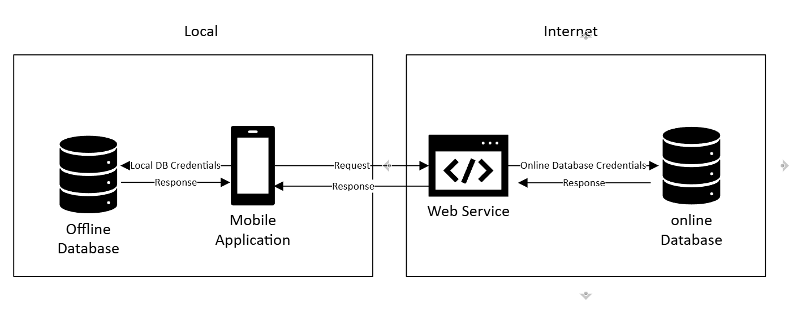

Professional Self-Assessment
Hello, I'm Ali Arslan. I've been writing code for 25 years and have been working professionally in the technology and IT sector for approximately 18 years. I started programming when I coincidentally came across a Basic programming language book. Over time, this interest evolved into different programming languages and competencies.
Throughout my career, I've served in many different positions from software developer to project architect, from team leader to secure software development. In all these roles, I had the opportunity to work with large teams in line with customer and project requirements. These experiences greatly strengthened my collaborative working competency. I have a particular interest in secure communication and image processing.
My computer engineering education spans many years. I first received my associate degree in computer programming, and then through Turkey's central examination system, I was placed in computer engineering four times and industrial engineering once. However, due to work intensity and attendance requirements, I couldn't complete my education. In 2024, I decided to complete this education. I had nearly a year available, and I focused this period on my education. By taking an average of four courses each semester, which is twice the normal course load, I'm approaching completion of my education in just over a year. My ultimate goal is to continue my academic career by being accepted into a doctoral program. Therefore, this education carries great importance for me. A large portion of the courses I took consisted of either subjects I had taken in my previous education or knowledge I had directly acquired in industry. Therefore, despite being an intensive process, I didn't experience major difficulties. Nevertheless, I'm very happy to have had the opportunity to learn valuable information and meet many experts in various fields throughout the educational process.
This ePortfolio will not only showcase my technical knowledge and skills by making improvements to an existing project but will also demonstrate how I applied these competencies in the projects I developed. The portfolio presents my qualifications in the following three main categories
- Software Design and Engineering
- Algorithms and Data Structures
- Databases
In addition to these three main categories, I will also demonstrate to what extent the project I developed within my portfolio meets the following course outcomes:
- Employ strategies for building collaborative environments that enable diverse audiences to support organizational decision-making in the field of computer science.
- Design, develop, and deliver professional-quality oral, written, and visual communications that are coherent, technically sound, and appropriately adapted to specific audiences and contexts.
- Design and evaluate computing solutions that solve a given problem using algorithmic principles and computer science practices and standards appropriate to its solution while managing the trade-offs involved in design choices.
- Demonstrate an ability to use well-founded and innovative techniques, skills, and tools in computing practices for the purpose of implementing computer solutions that deliver value and accomplish industry-specific goals.
- Develop a security mindset that anticipates adversarial exploits in software architecture and designs to expose potential vulnerabilities, mitigate design flaws, and ensure privacy and enhanced security of data and resources.
Artifact and Enhancements

This artifact is a simple inventory tracking application developed as part of the CS-360 Mobile Architecture and Development course. The application allows users to create different inventories, track the stock of products within these inventories, and send SMS notifications both at the inventory level and for individual products.
During the course, the application was developed to work with a local SQLite database. However, I aimed to connect it to an online MySQL database to allow access to the data from anywhere. Taking into account situations such as the lack of an internet connection or users not wanting to send their data to an online database, I decided to adapt the application to a hybrid architecture that supports both online and offline database functionality.
Open Original Artifact in GithubProject Development Phases
- Online Database Design: Creating a MySQL database that aligns with the architectural structure.
- REST Web Service Creation: A RESTful web service was developed to act as a middleware layer between the client application and the database.
- Mobile Application Re-coding: The backend code of the old application was not compatible with the new architecture, so the application was re-coded from scratch.
Why This Project? (Skills Narrative)
Reason 1: This project is an application that I designed and developed entirely on my own, not based on pre-existing code provided in the course. Additionally, it required the development of not only a mobile application but also a web service, making it a comprehensive project where I can showcase the best practices of software engineering. To get Milestone 2 click
Reason 2: The project involves a complex structure, where even the simplest tasks contain various branches. This situation will highlight my algorithm development and coding skills. While Java is used in the application, the web service side includes PHP and structures that handle different data types (Resource, List, ArrayList, Map, Object, Stream, primitive data types). This demonstrates my proficiency with various data structures.To get Milestone 3 click
Reason 3: The project incorporates both local and online databases. The Android mobile application and web service work as modules that process data between these two databases. This structure provides an opportunity to showcase my skills in database management topics such as data consistency, synchronization, and migration processes. It also demonstrates my SQL proficiency through the inclusion of DDL, DML, DQL, TCL, and DCL queries.To get Milestone 4 click
Considering these three reasons, this project was chosen as it meets the three core skills we were required to demonstrate during the course (architectural design, algorithm development, and data management).
Project Phases:
-
Architectural Design Creation
The necessary architectural documents, diagrams (architectural schemas, algorithms, sequence diagrams, database diagrams, etc.), and the requirements list were prepared during this phase. In the architectural design process, the need for a web service was identified. Although the MySQL database structure is suitable for network-based operation, distributing database credentials to each client poses a security risk.

Therefore, in line with the approach commonly used in modern systems, it was decided to place a middleware layer between the database and the client. This middleware stores the database credentials within itself, allowing only authorized users to perform the designated actions.
 -
Code Analysis
Click for code analysis videoThe existing project code was thoroughly examined, and sections that were compatible and incompatible with the architectural structure were identified. Based on this, necessary changes were planned.
-
Online Database Configuration
Open in GithubAn online database was created and configured according to the established architectural structure.
-
Web Service Development
Open in GithubThe web service, which would act as middleware, was developed using PHP programming language and the REST architecture. The reason PHP was chosen is that it offers rapid development due to its flexible structure and provides a secure infrastructure. The REST architecture, compared to SOAP, offers a simpler and more effective development process.
-
Application Development
Open in GithubThe backend code of the application was redesigned to be compatible with the new architecture. A RestHelper class was created to perform REST operations. The DbHelper and RestHelper classes were integrated to be used together as needed.
Course Outcomes:
In the initial phase of the project, the architectural work and the charts created strengthen communication at the organizational level. In an organization, there can be stakeholders from different disciplines. The best way to communicate with these individuals is by using a common language. The charts developed and standardized for this purpose ensure that each stakeholder has information about the project. This addresses the second course outcome. Additionally, these charts and the generated requirements document enable all stakeholders to stay informed about the project, ensuring their active participation in decision-making processes. This creates a collaborative environment, which corresponds to the first course outcome.
The core architectural template (service-oriented integration) and algorithms developed for complex structures (such as locking mechanisms) demonstrate the ability to find algorithmic solutions to complex problems and follow industry best practices, thereby fulfilling the third course outcome.
Throughout the project, two different programming languages (Java and PHP), two different databases (SQLite and MySQL/MariaDB), and two different technologies (REST API and Android SDK) were used. The use of all these technical skills and tools within the same project proves that I am a Full Stack Developer. This supports my career goals in project architecture and development team leadership, fulfilling the fourth course outcome.
Upon reviewing the project, it can be observed that since the local section can be bypassed, most of the security was shifted to the front end. In this development, the following standards and principles were considered:
Standards:
- Filtering of user input data: Prevented vulnerabilities such as Remote Code Execution, SQL Injection, and XSS (Cross-Site Scripting).
- Filtering of output data: Prevented potential data leaks or background processes from revealing information about data handling.
- Data type checks: Values like numeric, string, and boolean (e.g., isNumeric) were checked. This helped prevent issues like integer overflow and memory overflow, making the system secure against DOS attacks.
Principles:
- Credential Security: A web service layer was created, connecting without distributing database credentials.
- Minimal Design Principle: Only core libraries were used, reducing the attack surface for hackers and creating a more secure structure.
- Authorization: With this session system, users were subjected to strict authorization controls regarding what actions they could perform.
- Authentication: A session control structure was established, and each action was checked, implementing an active authentication system.
- Deny Default: All actions and states were considered, and users were provided with a single path. By default, all paths were denied, and only the allowed actions were permitted. This created a more robust system by limiting unauthorized access.